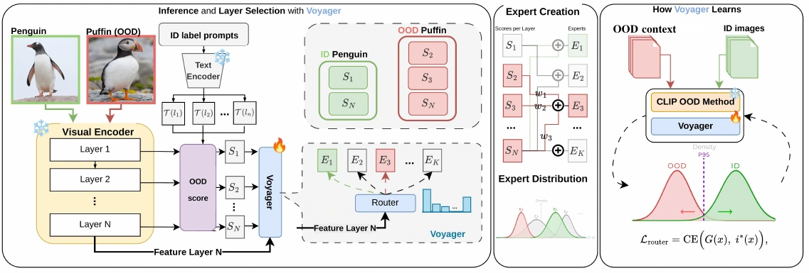

Not all layers
are equal.
Learning to select layers for reliable out-of-distribution detection.
Voyager learns which frozen CLIP layers to trust for each image, instead of using one fixed fusion rule.
1 Adelaide University · 2 Australian National University
3 Crossing Lab
Illustrative layer selection.
18.86%Average FPR@95 ↓ lower is better
94.49%Average AUROC ↑ higher is better
8.8 pointslower average FPR@95
than four-shot Local-Prompt (ID-derived context)
ImageNet-1K
CLIP ViT-B/16 · 4-shot ID + WebContEX
One fixed route
misses evidence.
The final representation is only part of the story.
Intermediate CLIP layers retain different visual cues. The useful combination changes with the input and the distribution shift, so averaging the same layers for every image can leave useful evidence untapped.
Voyager keeps the representations and confidence scores frozen. It learns a smaller decision: which sparse layer expert should supply this image’s score?
It builds on Mysteries of the Deep, moving from fixed intermediate-layer fusion to learned, input-conditioned selection.


Four OOD shifts from the study. Images are excerpts from the manuscript’s recorded routing examples.
Same model.
A different route.
Each expert averages a subset of layer scores. Every candidate includes the final layer as a semantic anchor; the router selects one expert per image.
A sparse, input-conditioned expert
Input A uses layers 3, 5, 6, 9 and 12. Changing the input can change the route.
Illustrative schematic, not model output. No inference runs in your browser. The selected expert averages its frozen layer scores; these bars indicate selection, not attention or confidence.
Frozen evidence
CLIP image features, text prototypes, and layer-wise OOD scores stay unchanged. An expert is an unweighted mean over a final-layer-anchored subset.
Lightweight learning
A small MLP router learns from few-shot in-distribution examples and WebContEX: weak web-retrieved context constructed from the ID label set. Training uses no target-OOD images or labels. The deployed context comes from Wikimedia Commons; concepts are filtered to be at least two WordNet hops from the ID taxonomy. This semantic filter is not a guarantee of complete image-level disjointness; the manuscript details the construction and deduplication scope.
Simple inference
Each router chooses one expert. The deployed five-router ensemble averages their outputs while sharing one frozen CLIP forward pass. WebContEX is needed only during training. The manuscript reports 4.18 ms per image for the deployed model versus 4.08 ms for fixed 12-layer GL-MCM and 3.21 ms for MCM on its measured single-GPU setup; these are hardware-specific timings.


Results, in context.
ImageNet-1K as the in-distribution dataset, CLIP ViT-B/16, and four OOD shifts. FPR@95 measures the OOD fraction accepted when ID recall is 95%.
| Method | iNaturalist | SUN | Places | DTD | Average |
|---|---|---|---|---|---|
| MCM zero-shot | 30.91 | 37.59 | 44.69 | 57.77 | 42.74 |
| GL-MCM zero-shot | 17.42 | 30.75 | 37.62 | 55.20 | 35.25 |
| MoD fixed fusion | 15.98 | 45.58 | 35.71 | 25.51 | 30.70 |
| CoOp | 14.60 | 28.48 | 36.49 | 43.13 | 30.67 |
| LoCoOp | 16.05 | 23.44 | 32.87 | 42.28 | 28.66 |
| ID-Like | 8.98 | 42.03 | 44.00 | 25.27 | 30.07 |
| Local-Prompt | 9.65 | 20.40 | 29.39 | 51.20 | 27.66 |
| Voyager | 3.93 | 21.65 | 21.88 | 27.96 | 18.86 |
Bold marks the lowest FPR@95 among methods with the selected shot count. Training-free references are shown for context. Baselines follow the manuscript’s reported comparisons; one-shot Local-Prompt is the authors’ rerun. Voyager additionally uses WebContEX, while Local-Prompt uses ID-derived local context. Voyager has the lowest average here; Local-Prompt is lower on SUN and ID-Like on DTD.
The gain comes from both the training context and the routing decision.
With the router recipe held fixed, replacing WebContEX with ID-derived context increases average FPR@95 from 18.86 to 26.71. With WebContEX and expert scores fixed, learned routing improves on the strongest score-based selector by 10.1 points.
These controls measure different contributions. The headline comparison is to a four-shot baseline; Voyager additionally uses weak web-retrieved context.
Look inside the routes.
Explore the manuscript’s diagnostics. Layer use and routed examples help explain the mechanism; they do not certify that every OOD input is detected.


Where the evidence stops.
Voyager requires a few-shot ID set and a weak web-retrieved training context. Results vary across datasets and backbones; the lowest average does not mean the lowest FPR on every shift.
The wider study includes Pascal-VOC, ImageNet-100, near-OOD subsets, and additional backbones. See the manuscript for their protocols, full comparisons, training costs, and limitations.
Take a closer look.
Not All Layers Are Created Equal: Learning to Select Layers for Reliable Out-of-Distribution Detection
The manuscript, implementation, and the work that motivated input-conditioned layer selection.
Code: DynAMO repository · public release pending
Read Mysteries of the DeepCamera-ready manuscript, updated 2 November 2026. Voyager is implemented in DynAMO. The repository is currently private; a public code release is pending. MIT code licence · Contact.
Cite this work
@misc{delajara2027voyager,
title = {Not All Layers Are Created Equal:
Learning to Select Layers for Reliable
Out-of-Distribution Detection},
author = {De la Jara, Ignacio M. and
Rodriguez-Opazo, Cristian and
Ranasinghe, Damith},
year = {2027},
note = {WACV 2027, camera-ready manuscript},
url = {https://mezosky.github.io/voyager/}
}Camera-ready citation, updated 2 November 2026. Final proceedings metadata will be added when available.